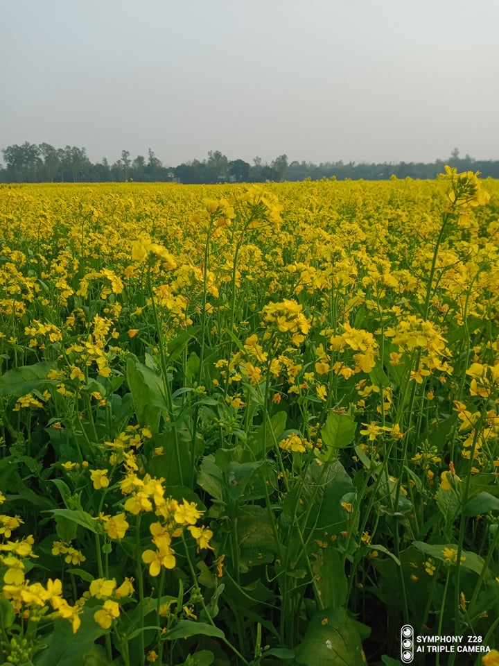

The riverine country of Bangladesh (“Land of the Bengals”) is one of the most densely populated countries in the world, and its people are predominantly Muslim. As the eastern portion of the historical region of Bengal, the area once formed, along with what is now the Indian state of West Bengal, the province of Bengal in British India. With the partition of India in 1947, it became the Pakistani province of East Bengal (later renamed East Pakistan), one of five provinces of Pakistan, separated from the other four by 1,100 miles (1,800 km) of Indian territory. In 1971 it became the independent country of Bangladesh, with its capital at Dhaka.
 List of river: